OCI Observability Onboarding Workshop¶
A hands-on workshop that teaches how to operate the full OCI Observability
stack — APM, APM RUM, Logging, Log Analytics, Monitoring, Stack Monitoring,
and Cloud Guard — using octo-apm-demo as the playground. Ten labs,
~6 hours total if done in one sitting; designed to be split across two
half-days.
How to use this workshop
Every page in the workshop section has a Configure your deployment panel just below the title (look for the ⚙ icon). Expand it once, enter your DNS domain, compartment OCID, and OCIR region, and every code block on every page rewrites itself with your real values.
Values stay in your browser only — they are never sent to any server. Click Reset to placeholders to clear them.
Who this is for¶
Engineers, SREs, and platform operators who:
- Know their way around a terminal and a browser dev console.
- Have access to an OCI tenancy with
octo-apm-demodeployed (or are ready to deploy it in ~30 minutes following one of the Getting Started guides). - Want to learn the OCI Observability surface end-to-end: not just one
service in isolation, but how traces, logs, metrics, and events
correlate through
oracleApmTraceId, W3C trace context, and a shared service-identity contract.
What you'll be able to do at the end¶
By the end of the ten labs you'll be able to:
- Find any HTTP request's full distributed trace across browser (APM RUM), edge (load balancer + WAF), application (FastAPI Python + Java sidecar), and database (Oracle ATP) — in under 30 seconds, starting from a user complaint.
- Pivot from a Log Analytics record to its APM trace and back, using
oracleApmTraceIdas the bridge. - Build a Log Analytics saved search and pin it to a dashboard widget.
- Author an OCI Monitoring alarm with a useful annotation contract (no "your CPU is high" alerts; alerts that actually point at the trace to investigate).
- Drill from an ATP wait event (Stack Monitoring) to the source SQL to the trace that emitted it.
- Investigate a WAF event and decide if it was a real attack or a noisy scanner — using request body, source IP intelligence, and the downstream application response.
- Run a chaos drill, observe what breaks, and resolve it without losing your audit trail.
- Diagnose a failed checkout end-to-end: customer report ("checkout didn't work") → trace → log → SQL → fix.
Workshop format¶
Each lab follows the same shape so you can scan ahead and plan:
| Section | What it does |
|---|---|
| Objective | One sentence — what you'll learn. |
| Time budget | Honest estimate (we tracked our own runs). |
| Prerequisites | Specific OCI policies, env access, prior labs. |
| Steps | OCI Console + CLI walkthroughs in parallel — pick whichever you prefer. |
| What you should see | Screenshots and example outputs. If your screen looks different, the troubleshooting section probably covers it. |
| Verify | A tools/workshop/verify-NN.sh script you run; exit 0 = lab complete. |
| Troubleshooting | The three most common things that go sideways. |
| Read more | Underlying docs, OCI service references, related code paths. |
The 10 labs¶
| # | Lab | Time | Pre-reqs |
|---|---|---|---|
| 01 | Your first trace | 20 min | platform deployed |
| 02 | Trace ↔ Log correlation | 30 min | lab 01 |
| 03 | Find a slow SQL from an APM span | 30 min | lab 02 |
| 04 | Detecting a frontend outage from RUM | 25 min | lab 01 |
| 05 | Custom metric + alarm | 40 min | lab 01 |
| 06 | WAF event investigation | 30 min | lab 01 |
| 07 | Build a Log Analytics saved search | 35 min | lab 02 |
| 08 | Stack Monitoring + ATP health | 40 min | lab 03 |
| 09 | Chaos drill | 50 min | labs 01-05 |
| 10 | End-to-end debug a failed checkout | 60 min | all prior labs |
Total: ~6 hours. Recommended split: labs 1-5 day one (~2.5h), labs 6-10 day two (~3.5h).
Prerequisites checklist¶
The labs assume your environment is already set up. Work through this checklist before lab 01 — most issues that look like "the lab is broken" turn out to be missing prerequisites.
1. Octo APM Demo deployed in your tenancy¶
Either deployment path is fine:
A single OCI Compute VM running shop + CRM + Java sidecar + Workflow Gateway as Podman containers, behind a public Load Balancer with WAF.
Follow the new-tenancy guide. Typical first-time deploy: 30-45 minutes.
Two-node OKE cluster with Helm-deployed services. Best for production parity testing.
Follow the OKE deployment guide. Typical first-time deploy: 45-60 minutes (cluster provisioning is the long part).
OCI-native Infrastructure-as-Code via Resource Manager. One-click deploy, suitable for repeatable demo provisioning.
Follow the Compute deployment guide. Typical first-time deploy: 25-40 minutes.
2. Local tooling on your laptop¶
You need a recent Bash shell, curl, jq, and the OCI CLI. Quick verification:
oci --version # 3.40 or newer
kubectl version --client --short
jq --version
curl --version
bash --version # macOS users: `brew install bash` for 5.x
If any are missing, see the Prerequisites page for install instructions per platform.
3. OCI permissions¶
You need Read policies on:
- APM domains (
Allow group <your-group> to read apm-domains in compartment <COMPARTMENT_OCID>) - Log groups + Log Analytics namespace
- Monitoring metrics
- Stack Monitoring resources
- WAF policies in the demo's compartment
The platform's deploy/oci/policies/
includes a workshop-reader policy template.
4. Optional: traffic generator¶
Strongly recommended. Without it, APM and RUM will show empty trace explorers — making it hard to follow the labs.
Deploy the synthetic traffic generator from
tools/traffic-generator/.
It runs a low-rate (~1 transaction/minute) loop: opens the storefront, adds a drone to the cart, checks out, and refreshes admin views. Enough signal to make every lab interactive without spamming your tenancy.
5. Platform reachability check¶
The single most important pre-flight check. Run this before any lab. Replace the placeholders with your real values (or use the config panel above — it rewrites these commands as you type):
# Storefront reachability (replace example.com with your DNS_DOMAIN)
curl -sS https://drones.example.com/ready | jq
# Admin reachability
curl -sS https://admin.example.com/ready | jq
Expected output for each (production OCI deployment):
{
"ready": true,
"database": "connected",
"apm_configured": true,
"rum_configured": true,
"logging_configured": true,
"java_apm_enabled": true,
"payment_gateway_simulation_enabled": true
}
What it looks like on a local docker-compose stack (no OCI tenancy attached — useful for first-time exploration):
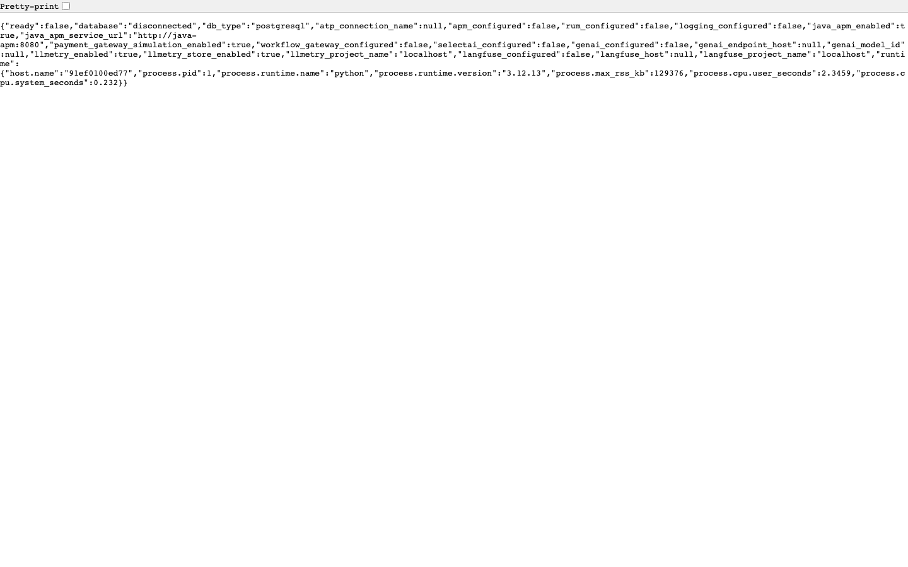
In the local case, apm_configured/rum_configured/logging_configured
all return false because there's no OCI tenancy attached — that's
expected for local exploration. For an OCI deployment, every field
should return true.
If any field is false on an OCI deployment, see the
Deploy Readiness page — it has a
per-field troubleshooting matrix.
What the storefront looks like locally¶
Once /ready returns 200, point a browser at http://localhost:18080
(local stack) or https://drones.example.com (your OCI deployment). The
storefront landing page summarizes the demo signals:
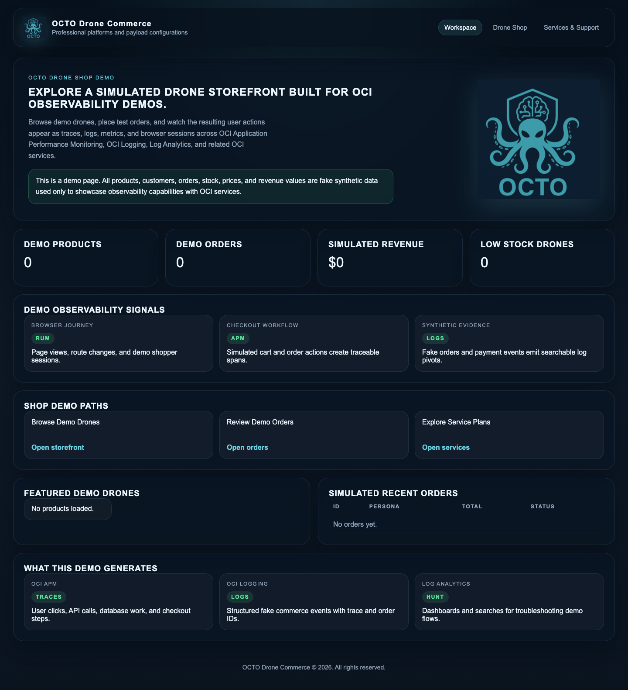
The page is intentionally minimal at first — synthetic data appears after the traffic generator has been running for a few minutes (orders, revenue, observability events).
Explore the platform locally before lab 01¶
Spend ten minutes clicking through the storefront paths to build intuition. What you'll find:
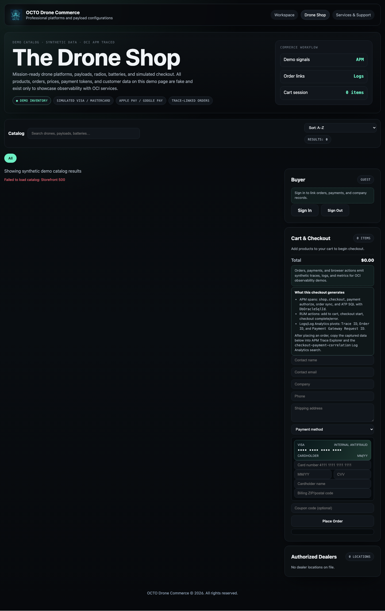
The product listing. Every product card click emits a RUM custom action — useful for lab 04. The traffic generator targets these routes to fill APM Trace Explorer.
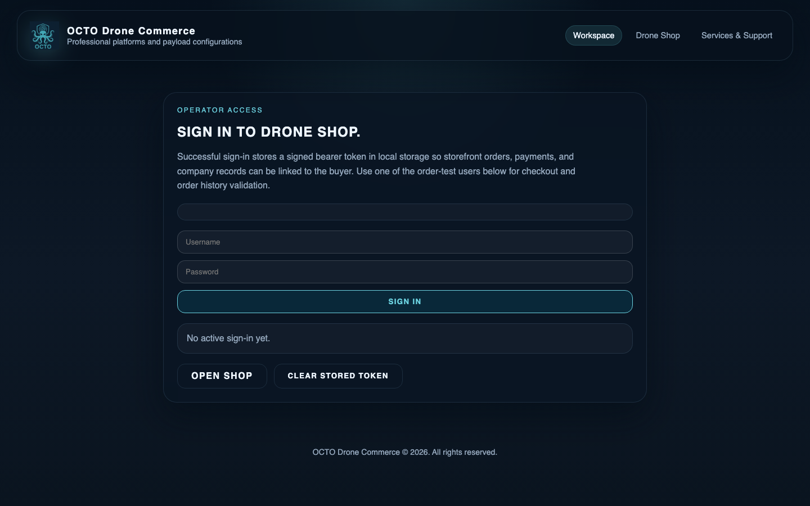
Customer authentication. Successful sign-in emits a structured log
record + an APM custom event with service.name=octo-drone-shop and
auth.outcome=success — referenced in lab 02 and lab 10.
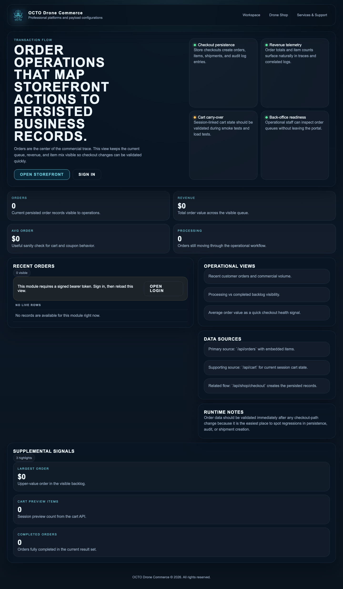
Cross-service order state — populated after CRM sync. The screenshot is empty here because the local stack starts cold; production deployments show signed-in users' recent orders.
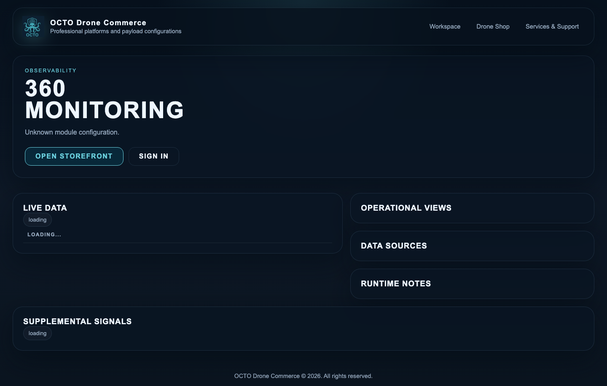
The 360° platform health view — live data, operational views, data sources, supplemental signals. Each panel maps to a specific APM trace pattern or Log Analytics saved search.
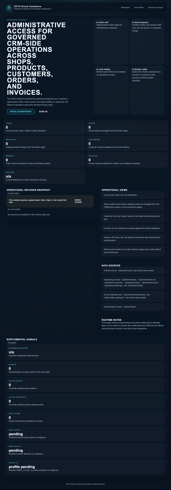
Admin operational records — orders, products, customers, shipments. Admin actions emit a separate audit log stream. Lab 09 (chaos drill) uses this surface.
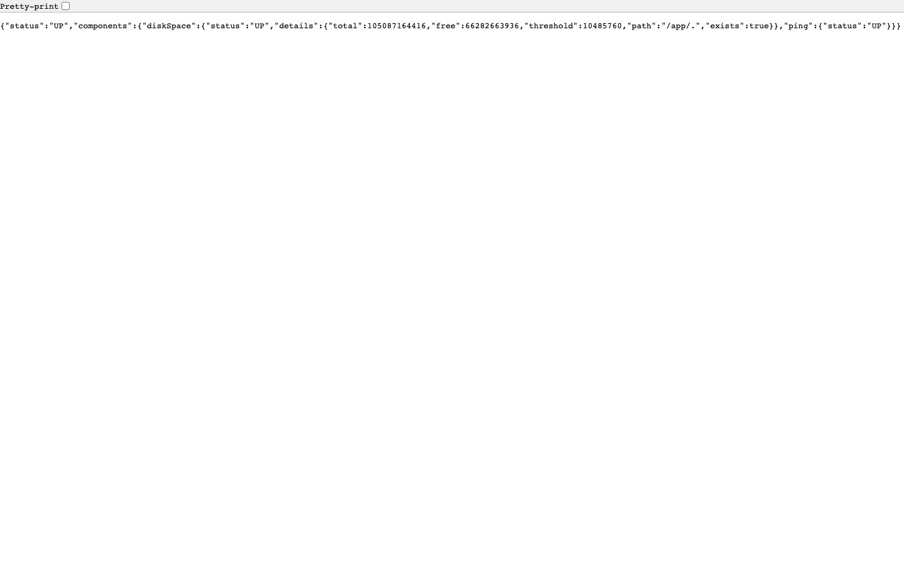
The Spring Boot payment sidecar exposes /actuator/health,
/actuator/info, and /actuator/metrics. OCI Stack Monitoring polls
these endpoints in production — lab 08 covers it.
What it looks like in OCI Observability¶
When the same storefront runs against a real OCI tenancy, the observability surface lights up. Examples (tenancy chips redacted):
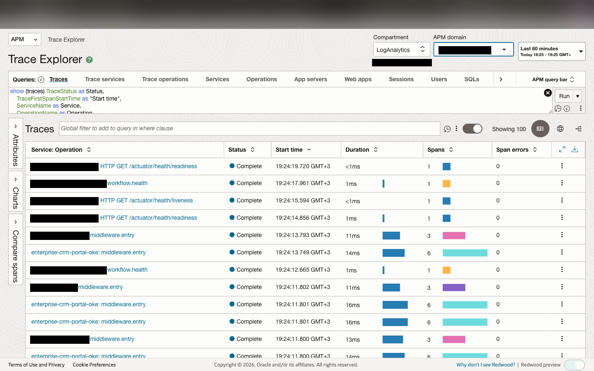
Every storefront request appears as a trace. Filter by service, operation, status, latency. Each row drills into a flame chart.
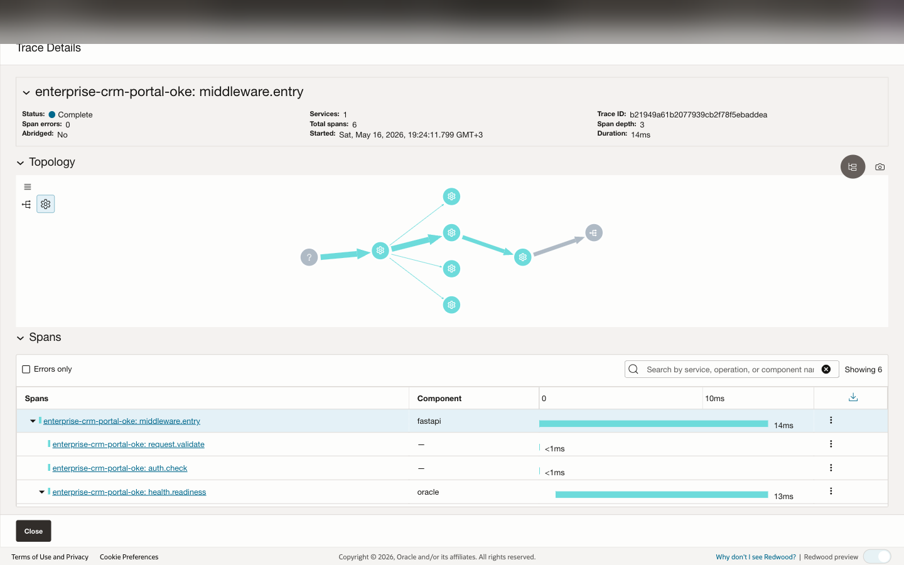
Parent FastAPI server span with nested SQLAlchemy / Java sidecar children. Span widths show their share of total wall-clock time.
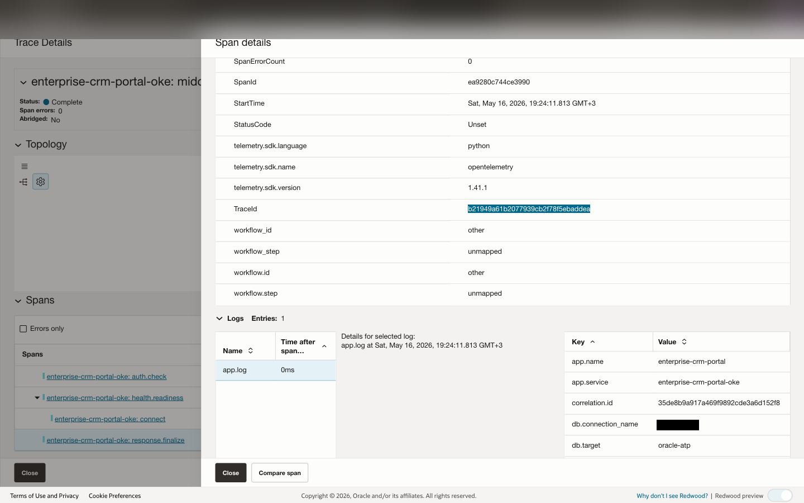
Right-hand panel reveals service.name, http.route,
oracleApmTraceId and the rest of the correlation contract.
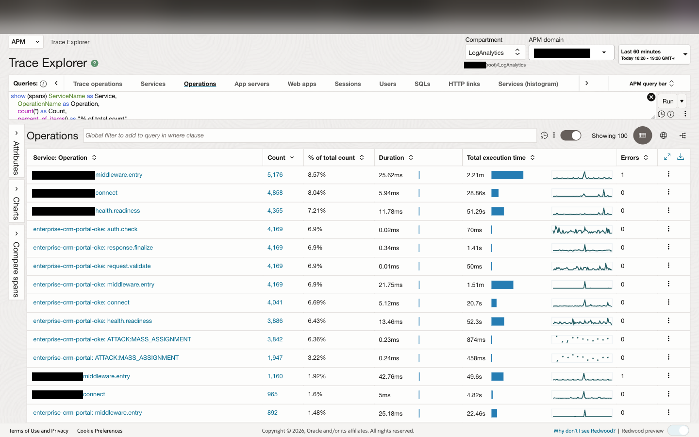
Service-level operations roll-up: per-route latency, throughput, error rate. Useful for spotting regression in a specific endpoint.
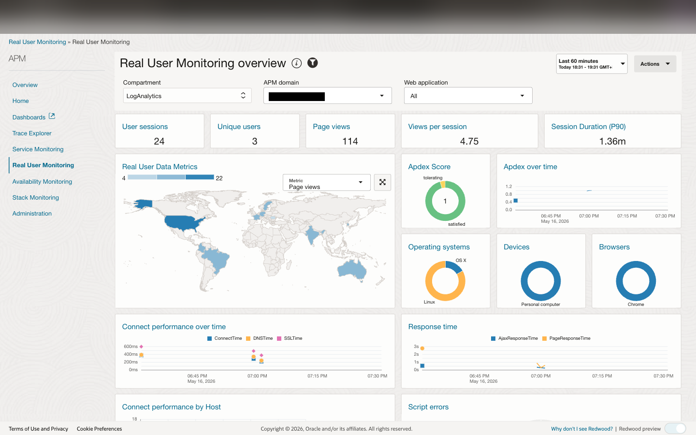
Real User Monitoring for the browser side: page loads, custom actions, geographic distribution, Apdex, response time, error rate. Sessions propagate W3C trace context into the FastAPI server spans.
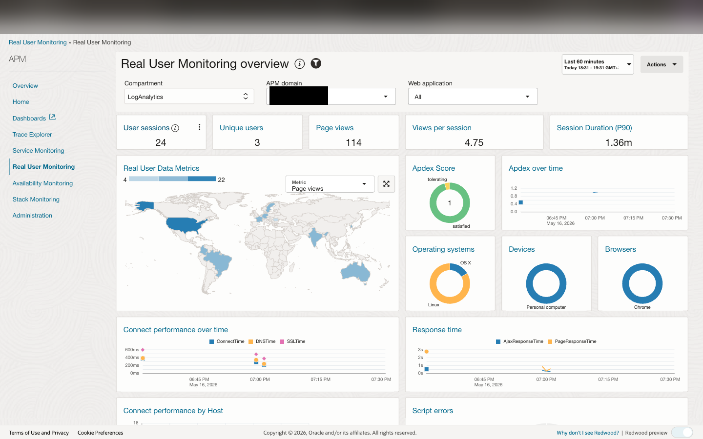
Project-shipped detection rules (auth anomalies, payment-rail patterns, attack-lab signatures). Each rule has its metric and dimension contract documented in the architecture.
Workshop conventions¶
- Shell: every snippet assumes
bash(not zsh-specific syntax). On macOS,bashfrom Homebrew works fine. - Hostnames: every URL uses placeholder hostnames like
drones.example.com/admin.example.com. If your tenancy uses a differentDNS_DOMAIN, enter it in the config panel above and every command on this page rewrites automatically. Tokens substituted:example.com,example.test,example.tld,${DNS_DOMAIN},<COMPARTMENT_OCID>,<TENANCY_NAMESPACE>,<OCIR_REGION>,<OCIR_TENANCY>,<github-username>,<DEPLOYMENT_PREFIX>. - OCI Console paths: instructions show menu paths like Observability & Management → Application Performance Monitoring → Trace Explorer. Path is identical across regions; only the region selector at the top differs.
- Log Analytics source names: older snippets may mention the legacy
octo-shop-app-jsonsource. In current deployments:- Direct/OKE app rows use
SOC Application Logs - Connector Hub rows from OCI Logging use
OCI Unified Schema Logsand should be checked withconnector-live-log-coverage.sql.
- Direct/OKE app rows use
- Verify markers: code blocks marked
# verifyare the snippets thetools/workshop/verify-*.shscripts execute on your behalf.
Certification¶
After lab 10, run:
./tools/workshop/certify.sh
It re-runs every per-lab verifier in sequence and prints a passport showing which labs you completed. Save the output — it's evidence you can attach to internal training records or PR descriptions.
Troubleshooting common setup issues¶
/ready returns 502 from the LB
The application pod/container is up but not responding. Check:
- VM path:
ssh opc@<vm> sudo podman ps— all containers should show(healthy). Ifocto-drone-shopis restarting, checksudo podman logs --tail 50 octo-drone-shopfor ATP wallet load errors or missing env vars. - OKE path:
kubectl get pods -n octo-drone-shop— all should beRunning 1/1 Ready. Common cause: missingocto-atp-walletsecret. See the Deployment Options page for the secret bootstrap commands.
APM Trace Explorer is empty
No traces being emitted. Check:
- Is the traffic generator running?
kubectl get pods -n octo-traffic-generatororsudo systemctl status octo-traffic-generator - Are the APM env vars set?
Should show
curl -sS https://drones.example.com/ready | jq '.apm'configured: true. Iffalse: missingOCI_APM_ENDPOINTorOCI_APM_PRIVATE_DATAKEY— see the project-leveldocs/CONFIGURATION.mdfor the full variable list. - Are you looking in the right APM domain? The domain OCID is in
your deployment's
OCI_APM_ENDPOINT.
Log Analytics shows zero rows
Logs not flowing through. Three possibilities:
- Service Connector Hub quota exhausted — common. Check
OCI Console → Observability & Management → Service Connector Hub.
If
available=0, you need to free a connector or request a quota increase. - Connector not yet processing the new log group — connectors have a 1-2 minute warm-up.
- Parser not extracting — run the
connector-live-log-coverage.sqlsaved search; if it returns rows, the connector is fine and the parser is the issue.
RUM dashboard says 'No data'
Check:
- Is the
OCI_APM_WEB_APPLICATIONenv var pointing to the right Web Application OCID? - Did you hard-reload the storefront after deploy? The RUM script loads on page load; cached pages won't emit beacons.
- Are browser ad blockers / DevTools network filters interfering?
Look in DevTools Network panel for requests to
*.apm-agt.<region>.oci.oraclecloud.com.
License¶
Same MIT license as the rest of the repo. Fork, adapt, ship for your own tenancy. Pull requests welcome — especially new labs covering OCI services we haven't reached yet (API Gateway, Functions, Streaming, Database Management).